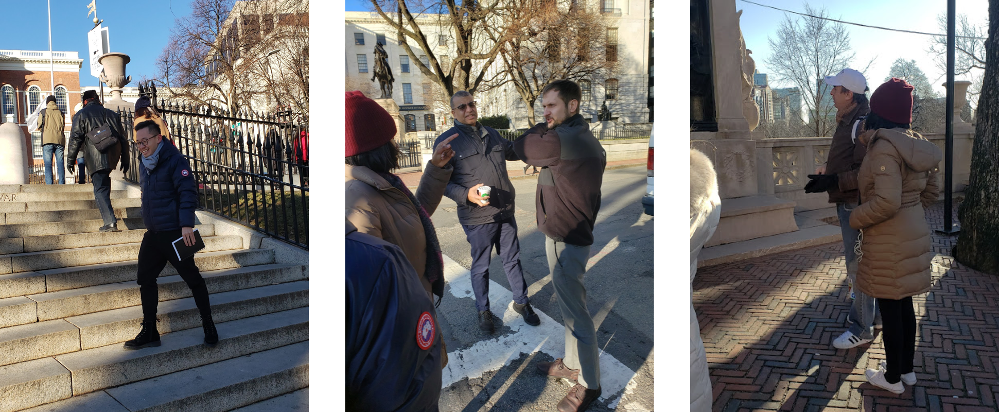
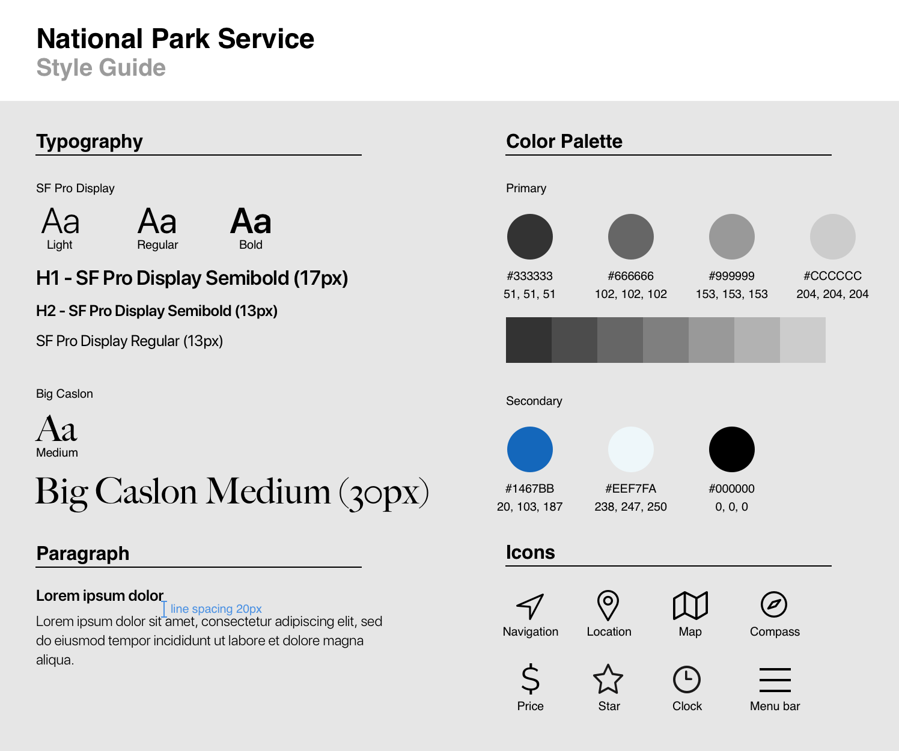

NATIONAL PARK SERVICE
Research｜Visual Design｜Interaction Design
The National Park Service (NPS) of Boston has a native mobile application that provides information about the historic sites, tours, and maps of the historic park areas.
I collaborated with two designers over two weeks on the project to add new features that accommodate trip planning and enhance the overall experience.
In this project, I experimented with several prototyping tools and played with some interaction design techniques.
EXPLORATION
- Understood the current standing of the app
- Discovered latent needs and pain points of the app’s target users
- Examined design patterns and principles of travel apps
The first challenge was to recruit users that properly represent our target group (as always).
Without further ado, we came up with two research approaches: usability tests on the existing app and user interviews to uncover latent needs. It turns out none of the people we talked to had seen this app.
We also attempted to contact the NPS. Unfortunately, the person in charge couldn’t speak with us at the time due to logistic reasons.
“I expected to see more info when I click on a site.”
– Jack H.
“I want a suggested time to spend at a particular site.”
– Sam M.
In spite of the harsh winter, we walked the trail and interviewed tourists and site staff along the way. The conversations provided valuable information on our target users’ characteristics.

One big lesson I learned was to never limit the scope of the comparative analysis. Had I researched on all travel products instead of tour booking apps only, I might get more inspiring ideas from it.
CONNECTING THE DOTS
- Explored major user problems and set the scope of the project
- Synthesized research findings to make informed decisions
- Developed two personas that represent target users’ characteristics
After collecting the research data, we used affinity diagramming to synthesize all the findings.
Since the existing app provides a large amount of information yet in an unclear structure, we struggled to re-organize the site-map and make intelligent assumptions on how to prioritize contents.
Based on what we discovered in the field trip, we dissected our user characteristics and developed two personas (primary and secondary) that keep us centered throughout the design process.
IDEATION & DESIGN
- Held a “design studio” to conceive and develop early design concept
- Defined the typeface, color scheme and pictograms into a style guide
- Implemented an iterative design process on all fidelity levels based on usability test results
In the “design studio”, members first did hand sketch individually. During the pitch and critique phase, we discussed each concept in a team setting and then used the 3-point vote to conceive our first paper prototype.
Sketch App was then used to develop mid-fi wireframes after key screens were identified after paper prototyping. The wireframes went through rounds of iteration.
I led the visual design and interaction design, and experimented with Sketch App, Framer X and InVision Studio to find out the most effective workflow.

PROTOTYPE
InVision Studio is used on visual and interaction design of the hi-fi mockups.
Three actions are shown here to explain on how I applied interaction to guide users in the app.
On average, test participants gave the app 4 out of 5 stars for overall experience.
—
OUTCOMES
Users responded well for the novel idea and simplistic redesign after they understand the app. However, many of them still tended to use the app to book guided tours. Building brand awareness certainly requires marketing and time, which is beyond the scope of this project.
There are three main takeaways from this project.
Focus on the outcomes, not the features, when designing an experience.
For a content-rich interface, good use of graphics reduces cognitive load and fosters positive emotions.
A functional team requires design thinking. Treat team members like my users.
What is next?
I will conduct 5-8 in situ user tests with the prototype to observe how people interact with the app, as well as a short survey for evaluating the digital experience. Feedbacks are going to be incorporated into the next iteration.